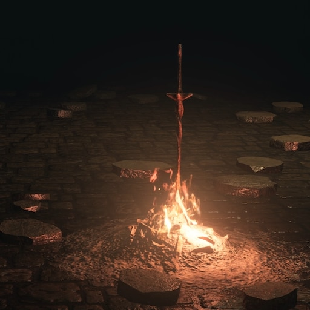
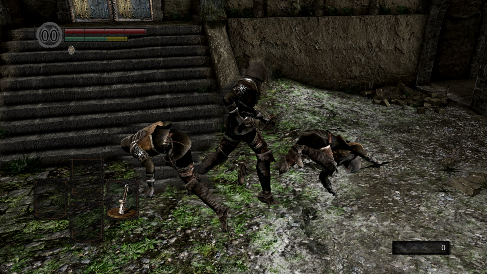

Concept
Expected player death
In Soulslike games, the concept of repeated player death is a core part of the gameplay experience. Players are often expected to die multiple times as they explore the game's world and encounter various enemies and obstacles. While this may sound frustrating, it is actually an intentional design choice meant to reinforce the game's difficulty and encourage players to learn from their mistakes. Each death provides an opportunity for the player to reflect on what went wrong and adjust their approach accordingly, leading to a sense of progress and achievement as they slowly improve their skills and overcome each challenge. Soulslike games typically feature a checkpoint system that allows players to respawn at certain points in the game world, but dying still carries consequences such as loss of progress or resources. The repeated player death in Soulslike games adds to the sense of risk and reward, making the eventual victory all the more satisfying.
Currency
The concept of currency as a means of permanently boosting a player's character is a key feature of many Soulslike games. This currency, often called "souls," is typically obtained by defeating enemies or completing objectives, and can be used to purchase new equipment, level up the player's character, or permanently increase certain attributes such as health or stamina. The catch is that if the player dies, they will lose all of their souls and respawn at the last checkpoint, requiring them to retrieve their lost currency by returning to the spot where they died. This creates a sense of risk and reward, as players must weigh the benefits of spending their hard-earned souls against the possibility of losing them all in a single misstep. The concept of currency in Soulslike games reinforces the game's difficulty and emphasizes the importance of strategic decision-making, while also providing a sense of progression and customization as the player's character becomes stronger over time.
Checkpoints
In Soulslike games, the concept of checkpoints serves as a means of saving progress and resetting the player's position in the game world. Checkpoints, often represented by bonfires or lanterns, are scattered throughout the game world and allow players to rest, replenish their health and magic, and save their progress. Upon resting at a checkpoint, enemies in the surrounding area will respawn, presenting new challenges and opportunities for the player to earn experience points and currency. Checkpoints can also serve as a means of fast travel, allowing players to quickly move between different areas of the game world once they have been unlocked. However, players must exercise caution when using checkpoints, as dying after resting will cause them to respawn at the last checkpoint and lose any progress made since then. The concept of checkpoints in Soulslike games creates a sense of tension and risk, forcing players to weigh the benefits of pushing forward against the potential consequences of losing progress.
Combat
Combat is a crucial aspect of Soulslike games, and is characterized by a number of unique mechanics that set it apart from other action games. The most prominent of these mechanics is the use of stamina, which governs the player's ability to attack, block, and dodge. Each action depletes a portion of the player's stamina bar, requiring them to carefully manage their resources and avoid overextending themselves in combat. Another key mechanic is the iframe roll, which grants the player a brief window of invincibility during a dodge roll, allowing them to avoid attacks and reposition themselves for a counterattack. This iframe roll is essential for surviving in combat and requires precise timing and positioning to execute effectively. The combat in Soulslike games is designed to be challenging and requires players to rely on skill and strategy rather than brute force, rewarding those who take the time to learn enemy patterns and master the game's mechanics. The result is a deeply satisfying combat system that emphasizes player agency and mastery, and is a hallmark of the Soulslike genre.
